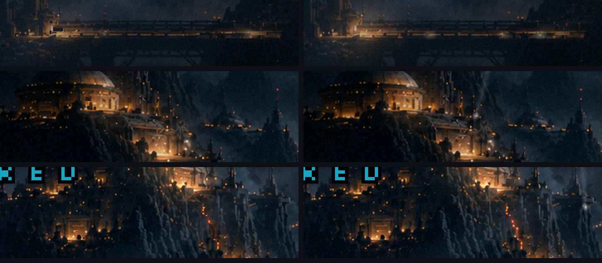
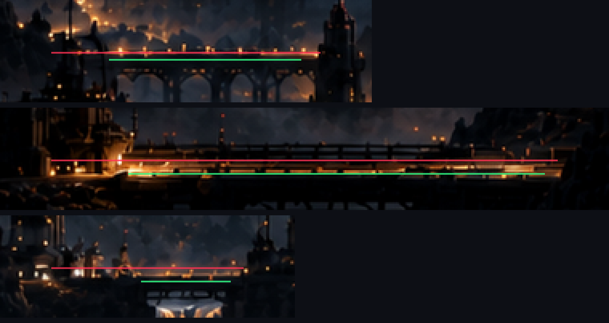
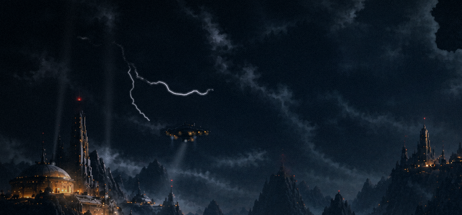
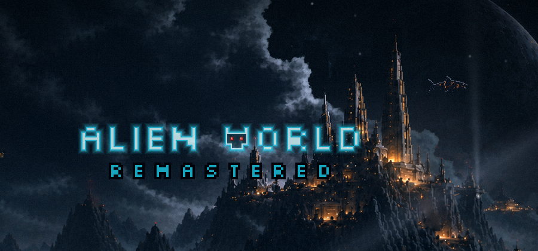
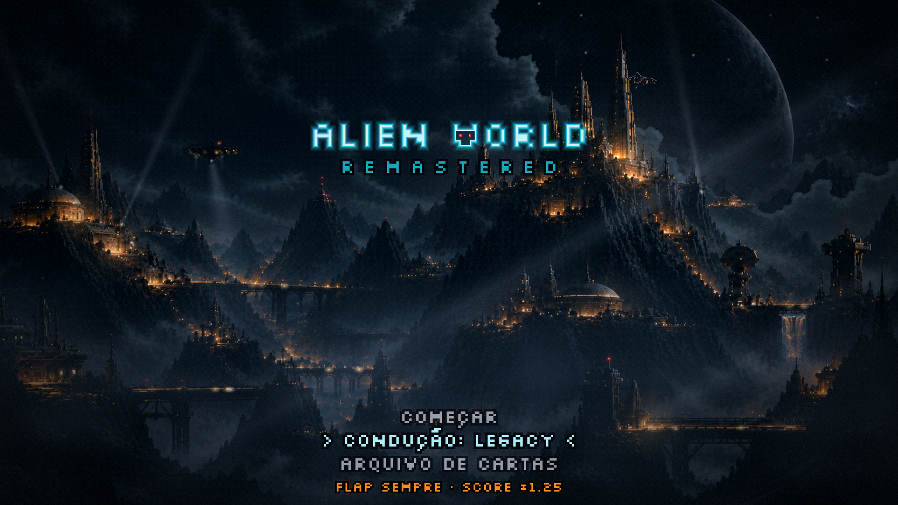
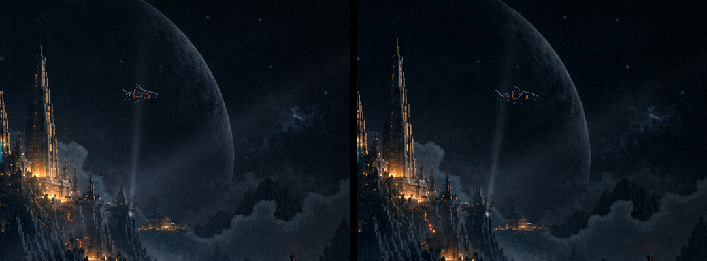
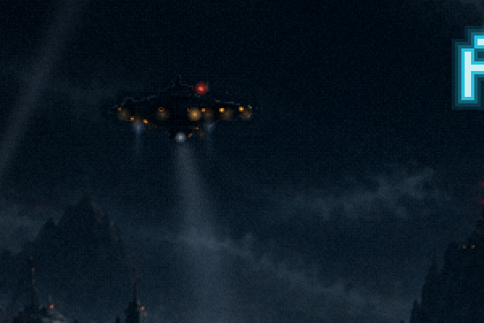
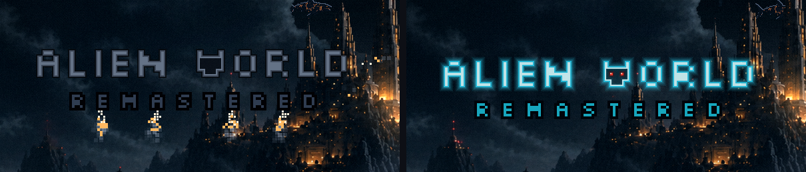

Menu refeito · rodada 8 · o perigo
19/10/2026. ← rodada 7 · Os seus pedidos: os detalhes pequenos não podem ficar estranhos (as falhas escuras e as luzes atravessando paredes); a nave com propulsores e luzes vasculhando a colônia; a tempestade chegando na massa de nuvem que você marcou; holofotes antiaéreos varrendo o céu. E as suas decisões: o neon do vídeo, com o olho acendendo só no final, e o REMASTERED como texto, com os jatos saindo de baixo das letras.
O menu
Os detalhes que estavam estranhos corrigidos
As falhas escuras
Eram três defeitos, todos na hora em que uma luz apaga:
- A luz apagada virava um buraco. O pixel aceso era multiplicado por 0,2 e ficava quase preto, mais escuro que a parede em volta, com uma franja laranja sobrando ao redor. Agora a luz é tirada da pintura: o lugar dela é preenchido a partir da vizinhança. Atrás de uma janela fica a parede, atrás de um farol fica o céu, e a franja quente sai junto.
- O pedaço apagado tapava a névoa. Era um retângulo opaco da cidade desenhado por cima da bruma, então quando a luz apagava aparecia um retângulo sem névoa. Agora o pedaço tem só os pixels que mudam e fica debaixo da névoa, como a cidade.
- Fachadas inteiras piscavam. A detecção de "farol vermelho" pegava também as fachadas laranja-saturadas, áreas grandes que piscavam como quadrados escuros. Agora farol é só vermelho puro e pequeno, e eles são 26.

As luzes que atravessavam paredes
O tráfego corria por linhas que passavam das pontas dos deques e entravam em prédios, rochas e torres (a do seu círculo é a ponte do meio, na ponta esquerda). Medi cada deque na pintura: agora cada luz anda só pelo trecho visível, na fileira das lâmpadas, e nas pontas some aos poucos, como quem entra num portão. A ponte curta sobre a cachoeira ganhou uma luz só.
Conferi as outras luzes com o mesmo risco: as da nave ficam no casco, as estrelas só no céu aberto, e os halos são brilho em volta das luzes fortes, o que está certo.

O perigo
A tempestade chegando
- Clarões por dentro da massa que você marcou. Cada nuvem acende pela própria claridade, e as silhuetas da frente (a torre, a cúpula, a nave) ficam escuras, em contraluz. O clarão nasce num ponto da massa e se espalha a partir dali, com dois ou três golpes rápidos em cada relâmpago.
- Raios bifurcados em alguns relâmpagos, recortados pela mesma máscara: passam por trás das torres.
- A nuvem pesada rolando: uma bruma escura que anda devagar só sobre as nuvens dessa massa, deixando-a mais densa que o resto do céu. Ela não escurece a cúpula nem a torre.
- A cena inteira pega um pouco de cada clarão.
No vídeo os relâmpagos têm hora marcada. No menu, viriam a cada 6–12 s, sorteados, e nunca durante a descida do letreiro.


Os holofotes antiaéreos
São três, em estruturas que existem na pintura: o topo da cúpula, o terraço à direita da torre alta e o terraço da direita da cidadela. Cada um varre o céu no seu próprio ritmo, devagar e procurando. Nenhum atravessa uma torre no caminho. O da cidadela sobe pela janela de céu onde o Leviatã nada, e às vezes passa perto dele.


A nave
Um holofote na quilha varre o vale da colônia, e dois propulsores frios embaixo do casco a seguram no ar.

O letreiro
Ele desce apagado e sem nenhum sinal dos olhos; os olhos só aparecem no fim, depois do REMASTERED. Os jatos de baixo agora saem de baixo de letras: o 2º E, o A, o 3º E e o último E, em pares simétricos. São quatro plumas com a força somada da queima que você aprovou.

A sua pergunta: é pesar demais?
Não, é cuidado com detalhe, enquanto houver hierarquia. Foi isso que segurei:
- Um evento por vez. O primeiro relâmpago vem antes do letreiro entrar e o próximo só depois dos olhos acenderem. Na descida, só os jatos do letreiro se mexem rápido.
- O que é constante é lento e fraco: os feixes varrem em 17–25 s, com ~14% de força, e a nuvem pesada anda alguns pixels por segundo.
- O que é forte é raro: o raio dura menos de um décimo de segundo, algumas vezes por minuto.
- E tudo conta a mesma história: a colônia de noite, sob uma tempestade, vigiando um céu de onde algo vai vir.
Para decidir sua vez
- A tempestade: a força e a frequência dos clarões estão boas? Quer raio em todo relâmpago ou só em alguns, como agora?
- Os holofotes: três está bom? A força está boa?
- O holofote da cidadela perto do Leviatã: deixo ele passar perto às vezes (a tensão de quase achá-lo), ou afasto o feixe do caminho do bicho?
- Ficou algum detalhe estranho que eu não vi?